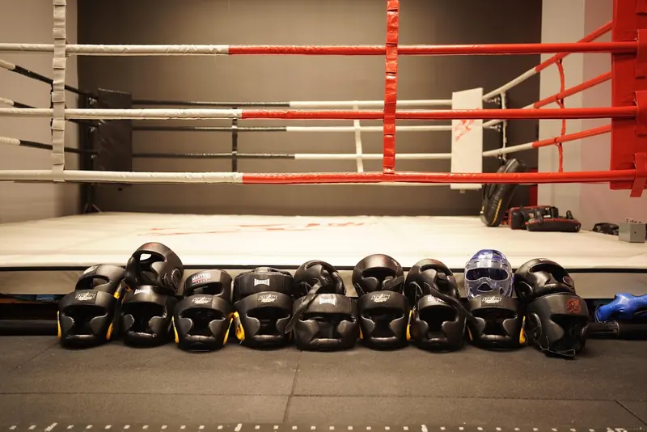
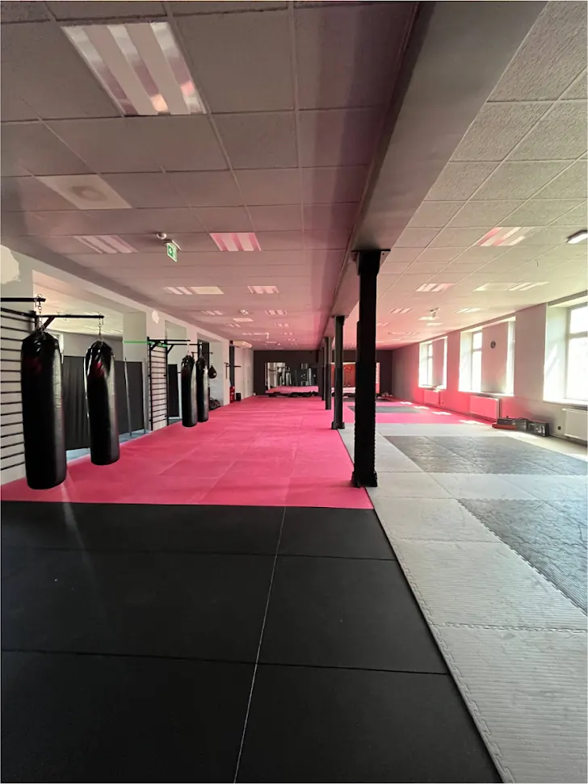
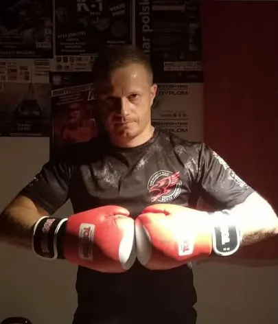
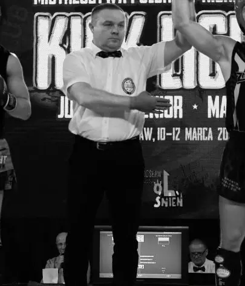
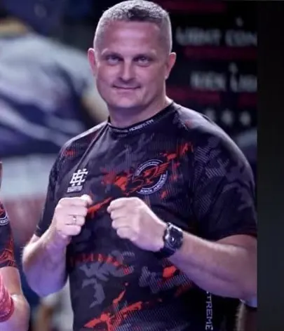
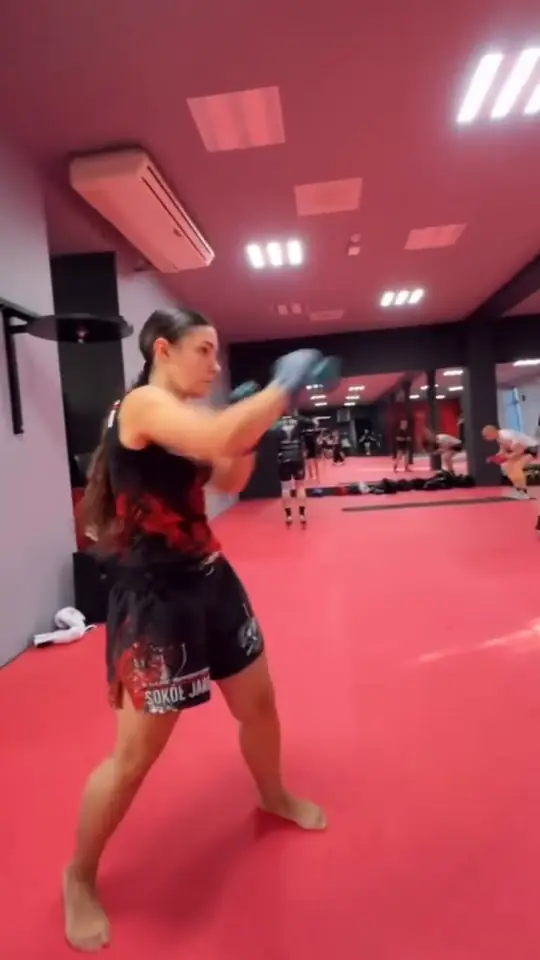
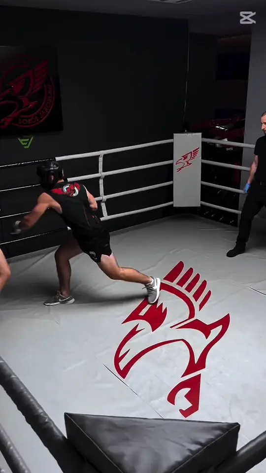

Boks w Jarosławiu we wtorki i czwartki
Treningi bokserskie w Fight Zone V3 Klub. Ring, worki, tarcze i trenerzy, którzy w sportach walki siedzą od kilkudziesięciu lat. Możesz zacząć od zera.
- Wtorek i czwartek, 19:00–20:15 (75 minut)
- Fight Zone na piętrze, Poniatowskiego 24, Jarosław
- Nowe osoby: piątkowy trening wprowadzający o 17:30

Czego uczysz się na boksie
Boks to tylko ręce, ale praca idzie z nóg. Zanim zaczniesz mocno bić w worek, uczysz się stać tak, żeby nie stracić równowagi po pierwszym ciosie.
- Postawa i garda. Ustawienie nóg, rąk i brody, z którego wszystko się zaczyna.
- Praca nóg. Krok do przodu, w tył i w bok bez krzyżowania nóg, skracanie i zrywanie dystansu.
- Ciosy. Proste, sierpowe i podbródkowe, potem łączenie ich w serie.
- Obrona. Blok, zbicie, unik i odchylenie, bo boks to też nie dać się trafić.
- Kondycja. Rundy na worku i tarczach robią swoje, 75 minut mija szybko.

Boks dla początkujących
Na boks można przyjść bez żadnego doświadczenia. Nie musisz mieć formy, żeby zacząć, formę robi się na treningach.
- Przyjdź w piątek o 17:30
Trening wprowadzający dla nowych osób w Fight Zone. Poznasz trenera, salę i podstawy.
- Weź strój sportowy, wodę i ręcznik
Rękawice i owijki kupisz z czasem, na start zapytaj trenera, jakie wybrać. do uzupełnienia: czy klub pożycza rękawice na pierwsze zajęcia
- Dołącz do grupy we wtorek lub czwartek
Treningi 19:00–20:15. Na początku pracujesz na workach i tarczach, sparingi przychodzą później.
Kto prowadzi boks w V3
Boks prowadzą w klubie trenerzy, którzy uczą też kickboxingu: dwóch trenerów II klasy PZKB i sędzia PZKB.



Boks czy kickboxing?
Obie dyscypliny trenujesz w tej samej sali, więc nie musisz wybierać na zawsze. Możesz je łączyć: razem to cztery treningi w tygodniu.
Boks
- Tylko ciosy rękami, dużo pracy nóg i obrony głową
- Wtorek i czwartek, 19:00–20:15
- Dobry wybór, jeśli chcesz dopracować technikę rąk
Kickboxing
- Ręce i nogi, kopnięcia na różnych wysokościach
- Dorośli: poniedziałek i środa, 20:00–21:15
- Grupy dla dzieci od 4 lat i grupa zawodnicza
Kiedy są treningi
Boks jest dwa razy w tygodniu. Po nim, o 20:15, w tej samej sali zaczyna się samoobrona i Krav Maga.
| Dzień | Godzina | Zajęcia | Grupa |
|---|---|---|---|
| Wtorek | 19:00–20:15 | Boks | wszyscy |
| Czwartek | 19:00–20:15 | Boks | wszyscy |
| Piątek | 17:30–18:30 | Trening wprowadzający dla nowych | wszyscy |
Grafik Fight Zone obowiązuje od 1 września 2026. Pełny tydzień: grafik zajęć.
Boks dla dzieci i młodzieży. Rodzice w opiniach piszą o dzieciach trenujących boks u trenera Jacka. do uzupełnienia: godziny i wiek grup bokserskich dla dzieci Najmłodsze dzieci zaczynają zwykle od grup kickboxingu od 4 lat.


O treningach boksu
Syn uczęszcza na treningi boksu do pana Jacka, jest bardzo zadowolony. Profesjonalny trener, świetne podejście do dzieci i młodzieży.
Najlepsza siłownia w mieście, dobre treningi boksu, a pan Jacek to super gość.
Fragmenty opinii z Map Google, skrócone.
Boks: pytania
Czy mogę zacząć trenować boks bez doświadczenia?
Tak. Najłatwiej zacząć od piątkowego treningu wprowadzającego o 17:30, a potem dołączyć do grupy we wtorek lub czwartek o 19:00.
Ile trwa trening boksu?
75 minut, od 19:00 do 20:15, we wtorki i czwartki.
Co zabrać na pierwszy trening bokserski?
Strój sportowy, wodę i ręcznik. Szatnie z prysznicami są w klubie. O rękawice zapytaj trenera przed pierwszymi zajęciami.
Ile kosztuje trening boksu w Jarosławiu?
Ceny karnetów na zajęcia Fight Zone i pojedynczych wejść są w cenniku V3 Klub.
Czy mogę łączyć boks z siłownią?
Tak, siłownia jest w tym samym budynku i działa od 5:00 do północy w dni powszednie. Zobacz siłownię.
Sprawdź też
Zacznij boks w piątek o 17:30
Trening wprowadzający dla nowych osób w Fight Zone, Poniatowskiego 24. Zadzwoń, jeśli chcesz się upewnić, że jest miejsce.